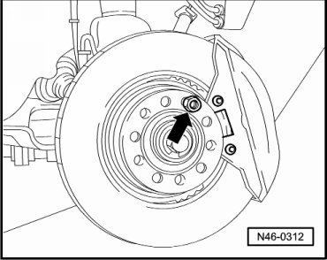
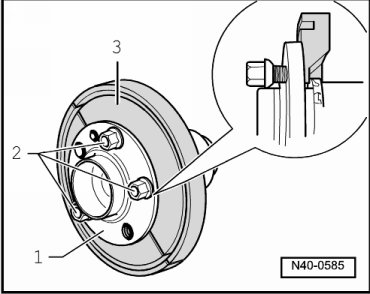
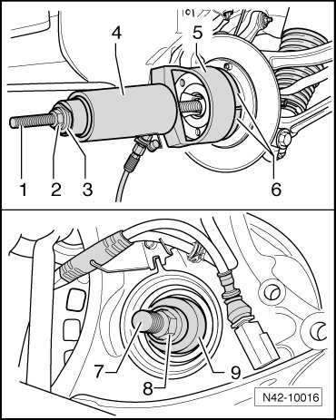
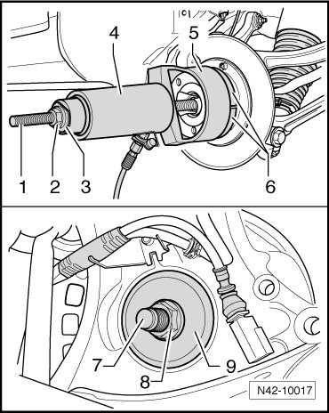

Wheel Hub with Bearing, with 16" Wheels
Wheel Hub with Bearing, with 16" Wheels
• During the entire work procedure, always ensure proper seating of tools and components (wheel bearing/wheel hub).
• Always place engine and transmission jack (VAG 1383 A) beneath wheel bearing housing during entire work procedure (danger of accident if parts fall off).
Special tools, testers and auxiliary items required
• Engine and transmission jack (VAG 1383 A) with universal transmission support (VAG 1359/2)
• Hydraulic cylinder (VAS 6178)
• Assembly tool (T10205)
• Separating tool (kukko 15/3)
• Hollow piston cylinder (VAS 6179)
• Pressure gauge w/connection (VAS 6179/1)
Removing
CAUTION!
Before starting work, stabilizer bars must be coupled in vehicles with separable stabilizer bars. Otherwise, there is the danger of injury caused by unintentional separation.
- Remove drive axle. Refer to --> [ Drive Axle ] Drive Axle
- Secure brake disc using a wheel bolt - arrow -.

- Remove brake caliper and secure to vehicle with wire.
- Remove brake disc.
- Unclip wire for wheel speed sensor from retainer.
- Remove Anti-lock Brake System (ABS) wheel speed sensor.
- Unhook parking brake cables at wheel bearing housing.
- Remove brake shoes of parking brake.
- Install attachments (T10205/12) with wheel bolts on wheel hub.
- Bolt the Grips (T10205/12) to the wheel hub with the wheel bearing.

1 Wheel hub with wheel bearing
2 Wheel bolts
3 (T10205/12)
- Mount tools as depicted in illustration.

1. Threaded rod M20 (T10205/8-1)
2. Threaded nut M20 (T10205/8-2)
3. Pressure head (T10205/13)
4. Hydraulic cylinder (VAS 6178)
5. Bell (T10205/2)
6. Gripping pieces (T10205/12)
7. Threaded rod M20 (T10205/8-1)
8. Threaded nut M20 (T10205/8-2)
9. Press piece (T10205/3)
- Pull out wheel hub with wheel bearing while holding device securely.
Installing
- Mount tools as depicted in illustration.

1. Threaded rod M20 (T10205/8-1)
2. Threaded nut M20 (T10205/8-2)
3. Pressure head (T10205/13)
4. Hydraulic cylinder (VAS 6178)
5. Bell (T10205/2)
6. Gripping pieces (T10205/11)
7. Threaded rod M20 (T10205/8-1)
8. Threaded nut M20 (T10205/8-2)
9. Guide piece (T10205/15)
- Connect pressure gauge w/connection (VAS 6179/1) between hydraulic cylinder (VAS 6178) and hydraulic line of hydraulic cylinder (VAS 6178).
Pressures, described in the following, apply only to the hydraulic cylinder (VAS 6178).
Shortly before pressing-in procedure is completed, readout pressure must be between 90 and 140 bar.
Maximum pressure must not exceed 310 bar.
- Press in wheel hub until stop.
- Install the drive axle. Refer to Drive Axle.
Further installation is in the reverse sequence to removal.